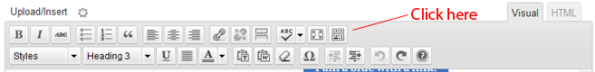

“BlueBubble v3.5 Wordpress Theme” Documentation by “imaginalgo”
“BlueBubble v3.5 Wordpress Theme”
Created: November
11, 2011
By: imaginalgo
Support: BlueBubble Support
Thank you for your interest in BlueBubble for Wordpress. This theme takes advantage of many of the new features included with Wordpress 3.0, such as: MultiSite, Custom Headers and the new Menu System. All this while keeping the same basic layout from BlueBubble version 2.9.2. Easy to install, easy to deploy - we hope you enjoy this theme.
Table of Contents
- What's New
- BlueBubble Features
- Installing BlueBubble
- BlueBubble Options Panel
- Setting Up Portfolio and Blog
- Contact Form and Social Sites
- Styles
- Other Options
- Portfolio Projects
- Help and FAQs
- Credits
A) What's New - top
The following is a list of changes, fixes and additions new in version 3.5:
- All-new Theme Options panel with many new options.
- Added option to upload Favicon or Logo from Theme Options.
- Replaced Shortcodes with Styles.
- New Portfolio layouts - 2 and 3 column with sidebar, 3 and 4 column full page.
- Hover overlay for portfolio images.
- New Custom Meta boxes for portfolio items - date and link.
- New Contact Form with custom error and success messages.
- Removed all color schemes except for Default and Dark.
- Updated Comments Form with new Twitter field.
As of version 3.5, the BlueBubble update notice has been moved. Notices will now appear under Dashboard, below the Updates notice.
B) BlueBubble Features - top
Thank you for your interest in BlueBubble for Wordpress. This theme has been renumbered 3.0 to coincide with Wordpress 3.0. It takes advantage of many of the new features included with Wordpress 3.0, such as: MultiSite, Custom Headers and the new Menu System. These are all included "out of the box" meaning that you won't have to mess with adding fields to the functions.php file.
In addition, there are several new and exciting features included with this version, including: a new Theme Options Panel with many new options, a logo and favicon uploader, a Colorbox pop-up for portfolio options, share any post with Twitter and Google+ buttons, and new Portfolio page layouts.
All this while keeping the same basic layout from BlueBubble version 2.9.2. Easy to install, easy to deploy - we hope you enjoy this theme.
Sincerely,
Thomas Veit and Mike Walsh
C) Installing BlueBubble - top
The installation process is now automated
in version 3.5! When you first activate the theme, the Blog,
Portfolio, and Contact
pages will be created automatically, along with the Main,
Top, Footer and 404 menus!
You can skip the following steps and simply go to the Settings
> Reading page and choose Portfolio for your
Front Page. DO NOT change the Posts Page
option. Now continue to the BlueBubble
Options Panel.
If you have a problem, however, please read the following:
First, make sure that you have Wordpress 3.0 or later installed. After installing Wordpress on your server, upload or copy the bluebubble folder to the wp-contents/themes directory. Once this is done...
- Login to your Wordpress admin page and activate BlueBubble Theme. (in Wordpress 3.0, if you are using the Multi Site function, remember that you have to first "allow" the theme in the Super Admin.
- Create a page. Name it home or whatever you like. Then, under Page Attributes, where it says Template, choose Portfolio.
- Create another page. Name it Blog or whatever else you like. Obviously, this will be for a blog. Then, under Page Attributes, where it says Template, choose Blog.
- If you would like to use the BlueBubble contact form, simply create a new page and name it Contact. (or something else) Then, under Page Attributes, where it says Template, choose Contact.
- Now, go to the Settings -> Reading page and choose the Portfolio page you created in #2 as the Front page. Note: DO NOT set the Posts page to your Blog page - leave it empty.
- After that, go to Posts -> Categories and create two new categories. You might name them Portfolio and Blog, but can be named whatever you like. These will be used to populate the pages you created in #2 and #3 with posts.
- To create the Main Navigation:
- Go to Appearance -> Menus. Where it says Menu Name: Enter Menu Name Here, type a name - whatever you like. Click Create a Menu.
- To make life easier later, check the box next to Automatically add new top-level pages.
- To the left, you should now see Theme Locations: Your theme supports 2 menus. Select which menu appears in each location. In the drop-down menu under Main Navigation Menu, choose Menu.
- Below this you will find a box with the title Pages. Click the boxes next to the pages you want to add to the menu, and then click Add to Menu. You can change the order of the pages in the menu by dragging them to where you like.
- BlueBubble also allows you to create a simple menu in the footer of the site. It is independent of the main navigation menu. To create a footer menu, follow the same steps as in #7, but where it says Menu Name: Enter Menu Name Here, type Footer. (or whatever name you like)
- In addition, BlueBubble features a 404 Error page that can help lost users stay on your website. On the bottom of the 404 Error page, you can display a menu of links that you want your user to follow. Simply follow the same instructions in #7, but name this menu 404. (or whatever name you like)
- Finally, under Appearance you should see an link named Theme Options. Click here to open the Theme Options Panel.
D) BlueBubble Options Panel - top
The BlueBubble Options Panel has been redesigned in version 3.5. It has also been relocated to Appearance > Theme Options.

Each option has a detailed explanation. Some new options in BlueBubble 3.5 include:
- Logo & Favicon Uploader: Click a button, select an image from your computer, and it is automatically uploaded!
- Text-Only Logo: You can choose to have a text-only logo instead of an image.
- WP Dashboard: Do you find some/all of the Wordpress Dashboard widgets annoying or unnecessary? Here you can choose to deactivate some or all of them!
- Contact Form: The contact form and the email it sends have been changed in this version. If there is an error in one of the fields, a general error message will appear at the top, and a specific error message will appear below the field. You can now customize these error messages, as well as create a thank-you message.
E) Setting Up The Portfolio and Blog - top
Because the page and menu creation in
BlueBubble 3.5 are automatic, most of the following instructions are
unnecessary. However, you may want to refer to them if you had problems
creating a menu and/or pages,or if you like reading technical
To set up a Portfolio, simply go to Theme
Options > Portfolio and select the Portfolio
Category you want to use. To set up the Blog, click Theme Options >Blog and
Posts and choose the Blog category you want.
Then skip to the next section, Contact
Form and Social Sites.
This section is pretty simple. Remember when you created your main page and blog page categories in step 2.5? Well, if you did this, then they will appear in the two drop-down menus in this section. Here you connect the pages you created in steps 2.2 and 2.3 with the categories you created in step 2.5.
The check box is quite simple - if you don't want users to be able to leave comments on your portfolio pages, check the box. (Note: Even with the box checked, people can still post to your Blog section)
Beginning with BlueBubble 3.1, you can also turn on and off the lightbox feature for Portfolio items. When turned off, clicking on the image will take you to the detailed portfolio page - the same as clicking Details in the text below the photo.
You can also indicate from the BlueBubble Admin panel how many Portfolio items you would like to appear on each page. If you enter nothing, it will show 6 items per page and automatically create other page(s) if there are more than 6 items.
F) Contact Form and Social Sites - top
The BlueBubble contact form now allows you to customize the error and thank-you messages. Go to Appearance > Theme Options > Contact Form and add the messages you want to appear when there is an error on the Contact Form. Don't forget to enter an email address at which you wish to receive email from the form, and save. If you do not enter an email address, all contact form emails will automatically be sent to the administrator's email account.
Under the Contact Form tab in the Theme Options, yo can click Social Icons. There is a series of spaces related to Social Media. If you would like to enter an icon link, for example, to your Twitter account, follow these two steps:
- Check the box that says Show Social Sites Section.
- Now, simply add the complete URL to your account. (Ex: if your Twitter username was johndoe, you would enter http://www.twitter.com/johndoe in the Twitter field.) The icon will appear at the bottom of the left sidebar.
There are 2 new options in BlueBubble 3.5: Google+ and Dribble
The Social Sites options are: Google+, Dribble Facebook, Twitter, LinkedIn, Delicious, Digg, DeviantArt, MySpace, Evernote, Flickr, Netvibes, Orkut, Reddit, ShareThis, StumbleUpon, Technorati, and Tumblr.
G) Styles - top
In previous versions of BlueBubble, you were able to create Buttons and Alert, Info, Idea or Download boxes using Shortcodes. The only problem with that was if you later switched to a different theme, you needed to erase the [shortcode][/shortcode] tags that were created
In BlueBubble 3.5, the currently popular Shortcodes have been replaced with Styles. This change allows you to create the same Buttons and Alert, Info, Idea or Download boxes as before, but without the extra [shortcode][/shortcode] text. In addition, there is a new Gray Button as well 1/2 and 2/3 Columns. Here is a brief explanation of how to use the new Styles:
- Create a new Page or Post:
First you should create a new post. In the text editor, there is a line of buttons below:
If you only see one row of buttons, click the last button - The Kitchen Sink - to display the second row. The first menu below should say Styles.
- Applying the Styles:
If you would like to create a button, first highlight the text in the editor. Next, use the Styles menu and click the color button you want. It will automatically change to a button. You can then add a link to the button!
H) Other Options - top
In addition to the options mentioned earlier, there are some other options that, while not strictly necessary, can help you enjoy more your experience with the BlueBubble theme.
Custom Logo: To replace the BlueBubble logo with your own, simply upload an image from the Media option, copy the URL and paste it in the option field.
Custom Favicon: Same process as Custom Logo. Paste the URL in the second option field. Note: your Favicon should be in .ico format, although some browsers also allow .png
SEO Fields: Under Search Engine Optimization you can add a Meta Tag Description, Meta Keywords, or a Google Analytics tracking code. Simply follow the instructions provided under this option in the control panel.
Custom User Fields: BlueBubble has added a few fields to the User Profile defaults provided in Wordpress. Enjoy!
Shortcodes: There are two types of shortcodes as of BlueBubble 3.2 - text boxes and buttons. Shortcodes are short code brackets that you can add while publishing that add new features. As of version 3.5, the shortcodes have been added to the Wordpress Write Panel. So you can click on the button with a green or blue dot to automatically insert the shortcode for a blue or green button.
Author Profile Box: From the blog section, you can click on the name of the author to see a separate page with the author's user profile information as well as a list of all their posts.
Custom Author Photo: It is possible to use a Wordpress Plugin to allow users to upload a custom photo, but there is another way. Upload a photo to the wp-content/themes/BlueBubble/images/authors/ folder with the same name as your user ID and in .jpg format. (to see your User ID number, select Users -> Users from the admin page, and hover over the name of the user desired. In the URL that appears in the bottom of your browser you should see user_id=#. That number is the user ID. The administrator has user ID 1.) For example, the administrator would upload 1.jpg. The ideal size is 100x100.
I) Portfolio Projects - top
If you have followed the steps above, adding an item to your portfolio is easy! Follow these steps:
- Go to Posts -> Add New.
- Type a title and a description for the item. Then click on Upload/Insert icon to Add Media.
- Select the image you want to use for your portfolio, and upload. The BlueBubble theme automatically crops two sizes - one for the portfolio page thumbnail, and one for the single portfolio item. (larger image)
- After uploading, you will see options for Title, Caption, Image URL, etc... At the bottom of the page, click the link Use as featured image. (it is not necessary to insert the image into the post)
If you are having trouble setting up a Portfolio or Blog, please read the other Help file which came with this theme.
J) Help and FAQs - top
The following are some frequently asked questions or confusing points. Please please read this document before asking questions on the BlueBubble page!
- Why doesn't the new author information box appear above my posts? In order to have this box appear, you need to fill out the Biographical Info section of your Wordpress user profile.
- How do I assign a custom photo with my comments and posts? In order to show a custom image, you need to have uploaded a photo to your gravatar account.
- What is a gravatar? A gravatar is a Global Avatar. In other words, the little image you see next to posts on blogs all over the internet. In order to get one, simply go to http://www.gravatar.com. You will register your email address, and then you can upload a photo.
- I did this and it still does not work. Make sure that the email address you registered with Gravatar is the same that you are using to leave a comment on the BlueBubble theme.
- I am the author of a post on BlueBubble, but when I leave a message or reply to another user, it does not show my comment in a different color. You must be logged in when you leave the comment or reply for your comment to show in the special author color.
- How do I change BlueBubble to Spanish? First, you must have Wordpress installed in Spanish OR have the language files installed. (read about this on the Wordpress.org website) After this is done, go to Settings => General. The last option allows you to select the language of your theme. Choose Spanish.
K) Credits - top
It was a lot of fun to work with this theme, adding some fun new features to an already wonderful Wordpress theme. But, I couldn't have done it with my own knowledge and artwork, so I would like to thank the following for the necessary inspiration and knowledge:
- My wife and her patience.
- My coffee, for being plentiful.
- The music of Silvio Rodriguez, which kept me company many a long night
- Wordpress, for their awesome CMS/Blog software, especially now with version 3.0!
- Iconspedia, for their free Exclamation Mark icon, used on the 404 Error page. Visit website.
- Thomas Veit, for creating the original BlueBubble Wordpress theme. Simple, and elegant. Check it out:
- NetTuts, for an excellent tutorial on creating Advanced Wordpress Panels. Check it out:
- NetTuts again, this time for a tutorial on creating a simple 404 Error Page. (This Wordpress theme excludes the auto-mailer):
- WooThemes, for the cool icons they offer. Their lightbulb icon is used in the Admin Option Panel for BlueBubble. Check out their icons at:
- Mali Studio, for fixing the error on the Portfolio page which would not show more than one page of items.
- WooThemes, for the design inspiration used to redesign the Options Panel.
Again, thank you for downloading and using this theme. Feel free to post s question at the BlueBubble Support Forum if you have any questions.
imaginalgo